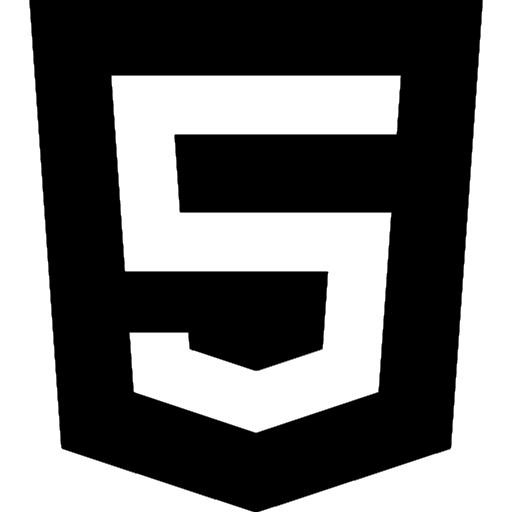
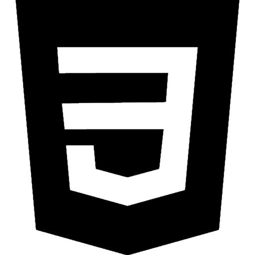
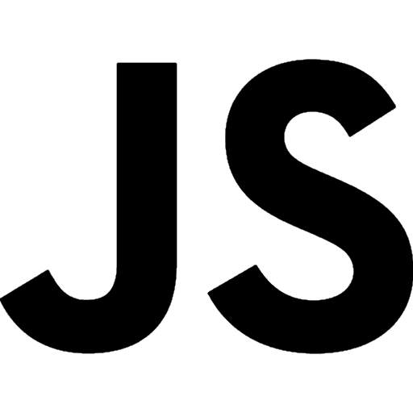
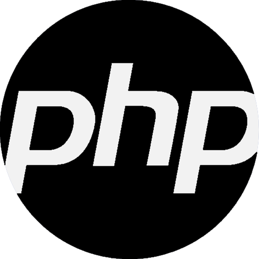
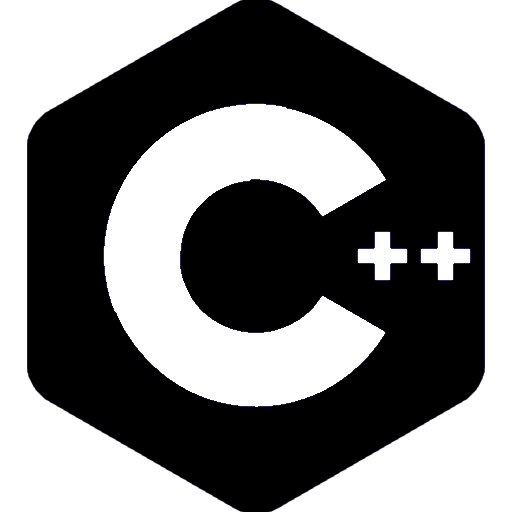
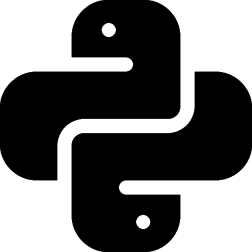
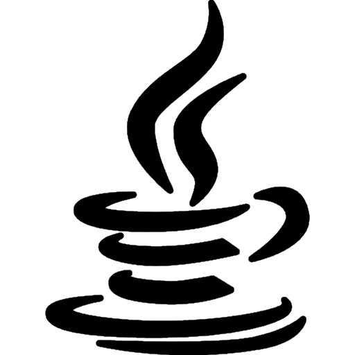
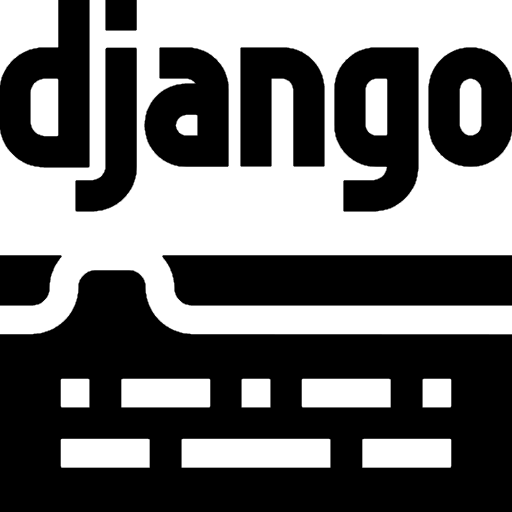
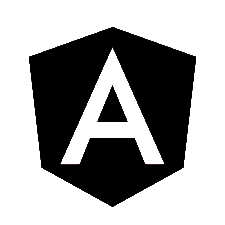
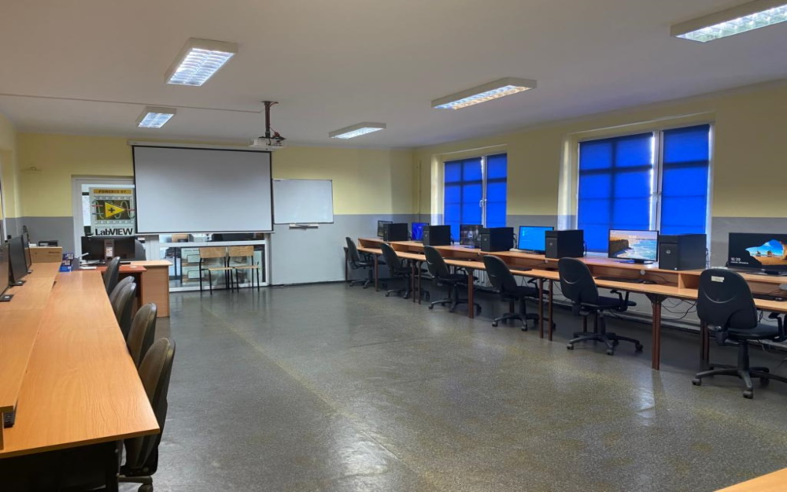

¿Qué aprenderás en nuestro programa?
Programación de sitios web en:
-

HTML
-

CSS
-

JavaScript
-

PHP
Creación y gestión de bases de datos
-

MySQL
Programación de aplicaciones móviles o software en:
-

C++
-

Python
-

Java
-

Django
-

Angular
Así como diseño y prueba de software/aplicaciones.
Idiomas en este programa:

Inglés - Desempeña un papel clave en la programación. La mayoría de los lenguajes de programación y de descripción basan su sintaxis en el idioma inglés, el conocimiento de este idioma facilita el aprendizaje de la programación, la adquisición de conocimientos de fuentes en inglés y aumenta la probabilidad de ser contratado por un empleador potencial.
Sala 309
¿Por qué nosotros?
El trabajo de programador también ofrece la posibilidad de trabajar de forma remota. Cada vez más, los programadores polacos, que son especialistas altamente valorados en campos específicos, son contratados por empresas extranjeras, pero no tienen que salir del país. Esto garantiza altos salarios, prestigio y experiencia en grandes empresas extranjeras sin salir de casa.

Los programadores son parte de las profesiones en las que la actualización constante de conocimientos es un elemento inseparable de su trabajo. El continuo progreso de la tecnología obliga a los programadores a un constante auto-desarrollo. Esto es importante si quieren estar actualizados.
 La escasez de empleados en el mercado laboral provoca altos salarios entre los programadores. Las personas que ingresan al mercado laboral pueden esperar un salario bruto promedio de 5500 PLN por mes. Los programadores con experiencia media pueden esperar alrededor de 10500 PLN por mes, mientras que los salarios más altos en el país se sitúan en alrededor de 16000 PLN brutos.
La escasez de empleados en el mercado laboral provoca altos salarios entre los programadores. Las personas que ingresan al mercado laboral pueden esperar un salario bruto promedio de 5500 PLN por mes. Los programadores con experiencia media pueden esperar alrededor de 10500 PLN por mes, mientras que los salarios más altos en el país se sitúan en alrededor de 16000 PLN brutos.
 Gracias a las prácticas, tendrás la oportunidad de aplicar en la práctica los conocimientos teóricos que adquirirás durante tu formación. La escuela técnica te brinda la oportunidad de adquirir experiencia y habilidades que serán invaluables en tu futura carrera profesional. No dudes, allí es donde podrás desarrollar tus pasiones y adquirir habilidades prácticas necesarias para alcanzar el éxito en el campo elegido.
Gracias a las prácticas, tendrás la oportunidad de aplicar en la práctica los conocimientos teóricos que adquirirás durante tu formación. La escuela técnica te brinda la oportunidad de adquirir experiencia y habilidades que serán invaluables en tu futura carrera profesional. No dudes, allí es donde podrás desarrollar tus pasiones y adquirir habilidades prácticas necesarias para alcanzar el éxito en el campo elegido.